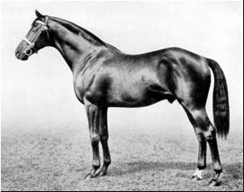

|
|
|
DARK RONALD....
Going,
going, gone... 
Pictured - Left: Son-In-Law -- Right: Dark Ronald We've spent a fair amount of time in Pedlines writing about sire lines which are fading fast. But none that we've discussed in the past has been in half as much trouble as Dark Ronald. This once proud sire line, which boasts such descendents as Beau Pere and Chefs-de-Race Foxbridge; Oleander; Son-In-Law; Vandale; *Herbager and *Grey Dawn II is down to a thimbleful of blood, and if it were not for the daughters of some of the above-named sires, it would be gone altogether. Still, though it most definitely is down, it is not entirely out. We have always had the highest regard for the German branch of this line, led by the late Acatenango. Somuchso, in fact, that when he died we wrote the following: "Whenever anyone talks about the 'cats' these days, it’s pretty clear they mean Storm Cat. But we had another cat we liked pretty darn well – okay, we loved him. His name was Acatenango and we lost him recently. Or rather the world lost him. For when a great member of a sparse sire line (in this case Dark Ronald) leaves us, the entire breed is poorer for his loss. "'Cat' was German by birth, and we fell in love with this not-very-pretty fellow because he was the first German-bred who had won a really important race outside of Germany in recent memory when he annexed the 1986 Grand Prix de Saint-Cloud. He didn’t run badly in England, either, placing third in the G1 Coronation Cup. "Of course in his native land, he was king. He won the German Derby and four other Group 1 races, was Horse of the Year in 1985 and 1987, champion older horse in 1986. Then he took his great pedigree home to stud and was leading sire in 1993, 1995, 1997 and 1999. "About that great pedigree – he was 5 x 5 to half brothers Dastur/Bahram (that’s x2 to Reines-de-Course Friar’s Daughter and Concertina) and inbred to Hyperion daughters Suncourt and Phaetusa. We could write a book about his sire Surumu, but suffice to say he offered Acatenango a double of the grand miler Indus (French 2000 Guineas, Grand Criterium, Criterium De Maisons-Laffitte) and an extra Phalaris line. "His was an almost unbroken tail-male line of German Derby winners, with only Literat in the Surumu-Literat-Birkhahn-Alchimist-Herold chain spoiling a perfect run. The tail-male line was, of course, the magnificent Dark Ronald. "Acatenango’s dam, Aggravate, was a daughter of Agressor, winner of the King George VI and Queen Elizabeth Stakes. Aggravate was a top-class stayer. She won the Park Hill Stakes (the “Fillies’ St. Leger”) and ran fourth in the Oaks. "Acatenango’s very best offspring are internationally well-known names: Lando (German and Italian Derbys and Japan Cup); Borgia (German Derby, 2nd Breeders’ Cup Turf); Sabiango (Charles Whittingham Memorial H., G1); Blue Canari (French Derby); Fraulein (E. P. Taylor S., G1 CAN); and Flamingo Road (German Oaks). "His daughters are just now starting to make some noise as producers. Nine have foaled stakes winners, including champion Zollner (GER) by Dashing Blade. Expect more to come. "Every year, it seems, we lose more and more of the old blood. The bloodlines that gave us diversity and substance, much of it great staying blood. Acatenango’s was exactly the kind of blood that would have provided a sounder, very precious counter, to the fragile creatures attempting to last six starts today. As usual, he was not appreciated for his gifts. Now how does that saying go? “Those who fail to learn from history are doomed to repeat it.” Farewell, 'Cat'." Acatenango’s son Lando is doing a decent if not outstanding job of carrying on. At stud in France at Haras D’Etreham he has sired a handful of good stakes horses but is not to be confused with his sire. Among his best are Paolini (GER), who ran second in the Arlington Million and Group 2 German winner Epalo (GER), as well as double French Group winner Touch of Land (FR) plus a whole slew of listed horses. Whether or not he is capable of breeding on remains to be seen. One thing that many pedigree students fail to note is that Hyperion and Dark Ronald come from the same sire line, that of Bay Ronald. Bay Ronald's son Bayardo branched off to Gainsorough/Hyperion, while his son Dark Ronald branched off to Son-In-Law (tail-male of *Herbager) and Herold (tail-male of Acatenango). Dark Ronald was a good two-year-old, but suffered an injury which kept him from racing again until he was four, when he won the Royal Hunt Cup and Princess of Wales's Stakes. He stood in England for three years before being sold to Germany, where his line would prosper. Son-In-Law, the best of Dark Ronald's English sons, was a truly great stayer whose career was impeded by the lack of racing at Royal Ascot during the war. However, even though he did not have the opportunity to win his own Ascot Gold Cup, three of his sons won it for him - Foxlaw, Bosworth and Trimdon. Carrying on the family tradition, Foxlaw then sired two Ascot Gold Cup winners of his own, Foxhunter and Tiberius. At the time when these deeds were accomplished, there was still ample room in racing for a good stayer, which sadly does not seem to be the case anymore. So while Tiberius languishes in the nether reaches of South American pedigrees and Foxlaw's line is scattered about the world via his daughters, a son of Bosworth named Plassy became the unlikely agent through which Son-In-Law's line would succeed in America. In short, Plassy won the Jockey Club Stakes (14 furlongs) and Coronation Cup (12 furlongs), then sired the good French runner Vandale (Prix Du Conseil Du Paris and Prix Henri Delamarre at a little less than 1 1/2 and 1 3/8 miles respectively). In turn, Vandale got the French Derby winner *Herbager, who A. B. "Bull" Hancock imported to Claiborne Farm in 1965. An extraordinarily good-looking horse of incredible presence and vigor, *Herbager was a glorious stallion. He also had a most unique pedigree, being inbred 3 x 4 x 4 to three-quarter siblings Pladda and Pharos x2. It is testament to "Bull" Hancock's ability to 'look into pedigrees' that a horse from a line of stone stayers was brought to this country because he had more "lick" in his lineage than was commonly thought. *Herbager also descended from the excellent Spicebox family, which has blossomed to include such international stars as Zabeel, Detroit and her son Carnegie and Final Straw. There is little doubt that most who bred to *Herbager did so partly out of loyalty to Hancock and partly because they felt he would be a good broodmare sire - which he was. But he also got an exceptional sire son, *Grey Dawn II, though Hancock did not breed him. *Grey Dawn II, who was grey as his name implies, also 'went brilliant' via his *Mahmoud blood and female family (the Judy O'Grady branch of Agnes Sard) and actually had very little in common with his sire. The best looking son of *Herbager to go to stud was the handsome Big Spruce, but he was unfortunately cursed by having descended from the Bourtai family, which is not know for producing good sires. So we are left without a son of Big Spruce, and only a handful of *Grey Dawn II descendents. Unfortunately, *Grey Dawn II's best son, Vigors, failed to breed on. A sire line in trouble is always a sad thing to see, but never more than now and never more than with this fine group of horses. Horses from this sire line are not necessarily plodders. But they are stamina types that give substance to their offspring. We'd like to see a regional horse we've never heard of jump up and advance this unique and different sire line into the 21st century with the same kind of strength that we expect one of Lando's sons to carry on in Europe. Having seen Lando and Borgia, Americans should no longer fear the Dark Ronald-line horse, or doubt his ability to compete on an international level. And while we doubt a son of Lando would either find favor in the U. S. or even fit very well here. Any *Grey Dawn II/Lando blood should be welcome. There is great tradition and history and a kind of special majesty about a sire line that once owned the Ascot Gold Cup. We remember, too, what it looked like up close in the majestic persona of *Herbager, who often stood for hours at a time and stared at the distant horizon, as if dreaming of coming down the straight at Chantilly or Longchamps. We don't know how many of you out there were privileged to have seen him, but we doubt that any of you who did see him will ever forgot him. How we'd hate to see his blood all fade away! We used to have some ideas for saving this sire line, but it seems to be mostly gone. Oh, there might be a Grey Dawn II-line horse in somebody’s back yard, or an old Big Spruce fellow somewhere. But we can’t find one. If you know of one of either – or any Dark Ronald-line horse for that matter, let us know. We even had a client several years ago who was inbreeding to *Herbager. Haven’t heard from her lately, but she had a lot of the blood and had plenty to work with. For all we know, she’s not alone. Anyone out there willing to save a sire line that owned Royal Ascot? If you give it a try, please shoot us a quick e-mail or fax. Because we’d like to thank you in person.
Ellen Parker's Son-In-Law story originally appeared in Pedlines #53, May 2000 and has been updated for inclusion on this website. |